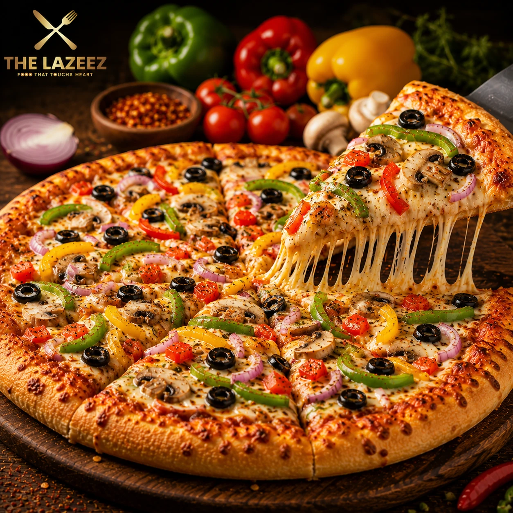

My Favorite Foods


Websites Link to Order Food:
My Favorite Food List:
- Pizza
- Burger
- Paratha
- Maggi
- Dosa
Top 5 Food Sold in India:
- Biryani
- Pani Puri/Golgappa
- Vada Pav
- Masala Dosa
- Samosa
Food Description:

-
Biryani (93M)
-
It refers to fragrant and flavourful rice dish that is slow-cooked along with marinated meat or veggies along with spices in layers and is topped with fried onions and saffron water. It is best served with salan and raita. The uniqueness of the dish lies in the art of of layering marination and par-boiled rice and then slow-cooking the combination of dum, resulting and aromatic one-pot meal.

- Burgers (44.2M)
-
It is a popular sandwich variety, that consists of a filling cooked patty made with veggies or meat and is usually placed between sliced bread or a bun, often accompanied by various toppings includin leafy greens, onions, and tomatoes and a variety of sauces.

- Pizzas (40.1M)
-
It is one of the most popular Italian dishes made with a flat, round base of dough that is baked and topped with sauce, cheese, and a variety of toppings. The healthier version of this Italian dish uses wheat flour or multigrain flour for the base in place of refined flour.